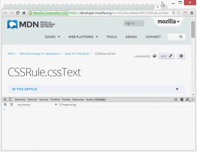

CSSViewer Chrome Extension 1.7
CSSViewer is a simple CSS property viewer for Google chrome originally made by "Nicolas Huon' as a FireFox addon.
CSSViewer source code can be found on GitHub at: https://github.com/miled/cssviewer.

How to use :
- CSSViewer shows the css parameters of any element in a web page. To enable/disable CSSViewer, simply click the toolbar icon and then hover any element on you want to inspect in current page.
- For quick usage you may use the available keyboard shortcuts:
[f] Freeze/Unfreeze the widget in place,
[c] Shows selected element simpleCssDefinition on a modal, and
[esc] Disable the viewer.
- To display the CSS definition, open Google Chrome console [F12] then right click on the element you're hovering:
CSSViewer console > element.simpleCssDefinition.
Note that the menu will only show up when you enable CSSViewer and will only work on the page you're inspecting. Also, CSSViewer will only work on http, https and local pages.
Privacy :
In order to work properly, CSSViewer requires the permission to access to your history and website data. However, CSSViewer do not collect nor will ever transmit any of your private data.
How to uninstall :
- Click the wrench icon on the browser toolbar.
- Click Tools.
- Select Extensions.
- Find the CSSViewer extension then click Uninstall.
Credits :
CSSViewer Chrome extension is a straight port of the Firefox CSSViewer add-on with minor enhancements. Credits goes to the original developer and contributors.
Changelog:
1.6: 11/2014 - Add inspect element to menu. Add generate css definition. Fix few issues with auto-positioning. reFix an issue with chrome/38.
1.5: 10/2015 - Hotfix an issue with Chrome/38.0.2125.101.
1.4: 02/2013 - A bunch of minor changes in order to release CSSViewer as an open source project at Github.
1.3: 08/2011 - Support some CSS3 properties under the "Effects' category.
1.2: 07/2011 - Fix some minor bugs.
1.1: 03/2010 - Initial version.
Known Issues:
The style may broke sometimes depending on the site you are surfing.